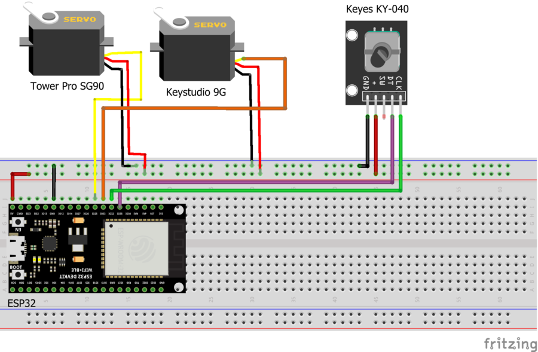
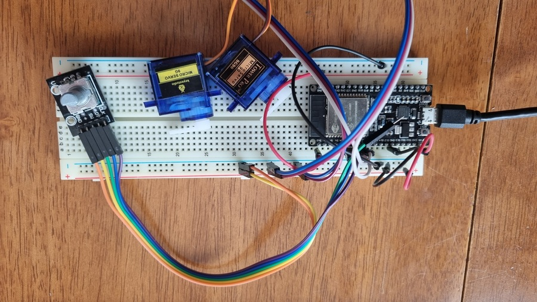
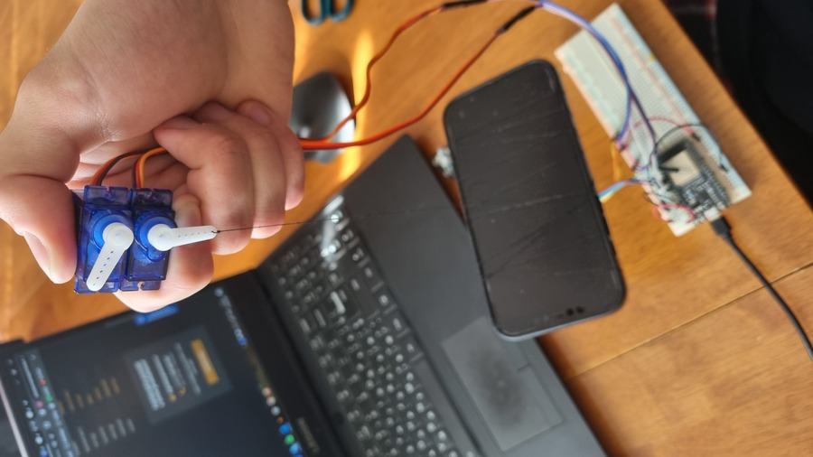
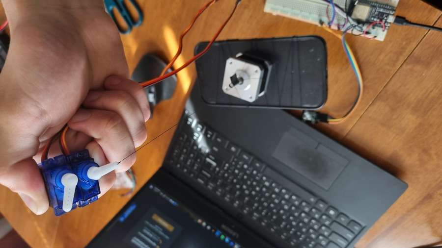
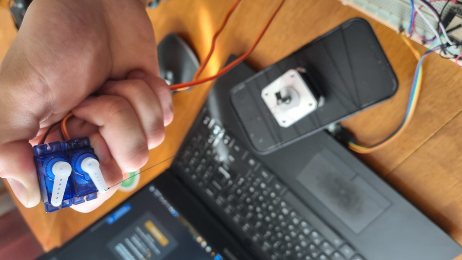

Week 7: Actuators and output devices
Testing max load of two Servomotors SG90 and their responce to an encoder
Testing max load of two Servomotors SG90 and their responce to an encoder
Servomotors max load and responce
Idea
As you can see in my Week 1 post, the semestral project is to create a Robotic arm control inteface. For this purpose we will need to use encoders which would transfer information to our motors copying the movements of the human arm. There was a mechanical rotary encoder Keyes KY-040 in our kit, so I decided to take it for testing, altough we will need to use something more advanced later like a magnetic rotary encoder. After that I did a little research and found out that a servo would be the best option for our purposes. I had two SG90 to use, let’s test them!
After the Week 6 project Atari Breakout game I found out that Arduino Nano has very little memory and processing power, although I tried to write the code as efficiently as possible. So I decided to switch to the ESP32.
Scheme and initialization
I used these components in my project:
- ESP32
- Tower Pro Micro Servo SG90
- Keystudio Micro Servo 9G
- Rotary encoder Keyes KY-040
- Wires and Micro USB cabel
Here is the circuit designed in Fritzing:

and how it looks in the real life:

Code
Basically I used a code provided by DroneBot Workshop 2019 for testing the servo responce to an encoder position, but with these changes: I connected and worked with two servos instead of one, and changed the counter value to increase/decrease every cycle by 2, not by 1 (explained down).
Most importantly, you need to find the right board for your ESP32. For my case DOIT ESP32 DEVKIT V1 worked just fine. Also note that you should use the library called <ESP32Servo.h> instead of <Servo.h>.
#include <Arduino.h>
#include <ESP32Servo.h>
// Rotary Encoder Inputs
#define inputCLK 32
#define inputDT 35
// Create a Servo object
Servo myservo1;
Servo myservo2;
int counter = 0;
int currentStateCLK;
int previousStateCLK;
void setup() {
pinMode (inputCLK, INPUT);
pinMode (inputDT, INPUT);
Serial.begin (9600);
myservo1.attach(25);
myservo2.attach(33);
previousStateCLK = digitalRead(inputCLK);
}
void loop() {
currentStateCLK = digitalRead(inputCLK);
if (currentStateCLK != previousStateCLK){
// Encoder is rotating counterclockwise
if (digitalRead(inputDT) != currentStateCLK) {
counter -= 2;
if (counter <= 0){
counter = 0;
}
} else {
// Encoder is rotating clockwise
counter += 2;
if (counter >= 180){
counter = 180;
}
}
// Move the servo
myservo1.write(counter);
myservo2.write(counter);
Serial.print("Position: ");
Serial.println(counter);
}
previousStateCLK = currentStateCLK;
}
Testing Servos’ responce to the encoder position
In this video I tested the responce of two different Servos SG90 to the position of encoder Keyes KY-040. There is Tower Pro Micro Servo SG90 on the left side and Keystudio Micro Servo 9G on the right. As you can see, Tower Pro moves much better. Sometimes a Servo from Keytudio didn’t move at all or created strange noises (it’s also possible that it was broken).
The reson why I changed the counter value to increase/decrease every cycle by 2, not by 1 is because the responce to the change of 1 degree was not accurate and sometimes two Servos just didn’t react to that change at all.
Testing max load of Tower Pro SG90 Servo
The claimed Tower Pro SG90 Servo Torque is 1.2kg-cm for 4.8V and 1.6kg-cm for 6V. I disconnected the second Servo so that it won’t take any power. The arm of servo has length of 1.5cm. So the max load we should expect the Servo to be able to lift is 1.2/1.5 = 0.8kg.
I tried to lift the iPhone 12 Pro Max that weights 230 + 60(case) = 290g, and my Servo was successful in this test.


Then I increased the weight, adding the Step motoe NEMA17 that weights 215g on top of iphone. Now the total load is 290 + 215 = 505g. Let’s try to lift that.


We can see that we lifted our load to some point successfuly, but not to the desired point. Servo even tried to reach it moving up and down, but failed.
Conclusion
After conducted experiments, we can state following things:
-
The responce is in the satisfactory range for Tower Pro SG90 Servo taking into account its price and size. The Servo from Keystudio failed completely.
-
Although Tower Pro SG90 Servo did’t reach the declared maximum load, the weight capacity is also in a satisfactory range for our future load weights.
I think for our idea we will buy servo motors of the same size, but with metal parts and 360 degrees range of movement.